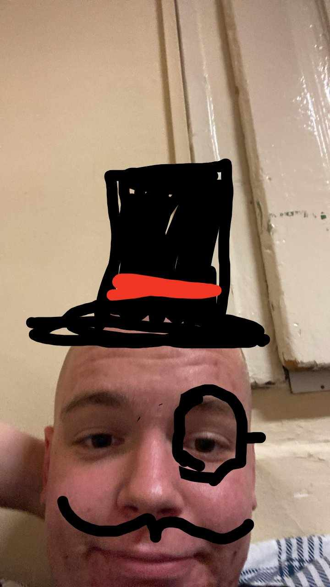
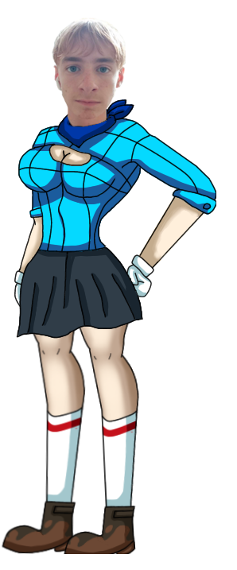

Mia Khalifa
Élet története
1993-as születésű, tevékenységét 2014-ben kezdte. Szülei elhatárolódtak tőle. 2016-ban abbahagyta karierjét és sportolónak állt.
Fun facts
- 22 évesen kezdte
- arabok szerint megsértette Iszlámot miután hidzsábban szerepelt egy filmben
- két tetoválása van, mindkettő hazájához kapcsolódik: az egyik a libanoni himnusz első sora, a másik a libanoni hadsereg keresztj
- egy online petíció indult annak érdekében, hogy Donald Trump amerikai elnök Mia Khalifát tegye meg Szaúd-Arábia következő amerikai nagykövetévé
Támogatás
Szeretnénk megköszönni ez oldal létrejövetelét
Nagy Sándornak
Kereszt Gyulának

